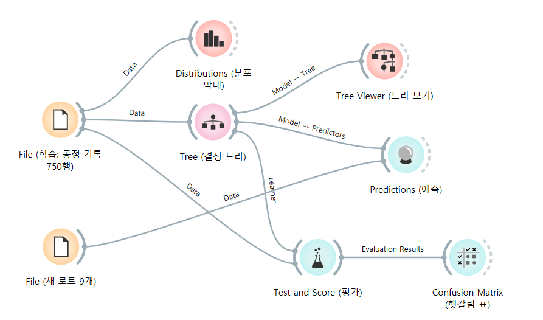
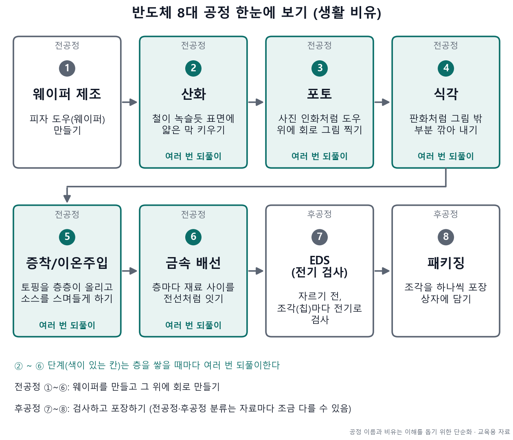
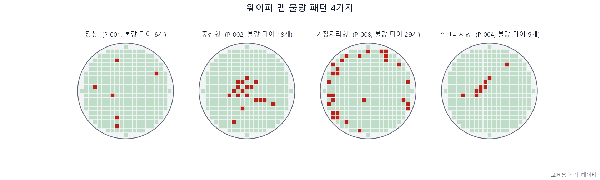
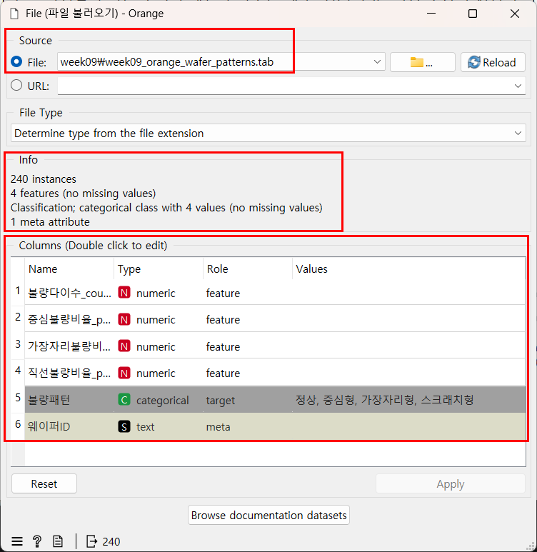
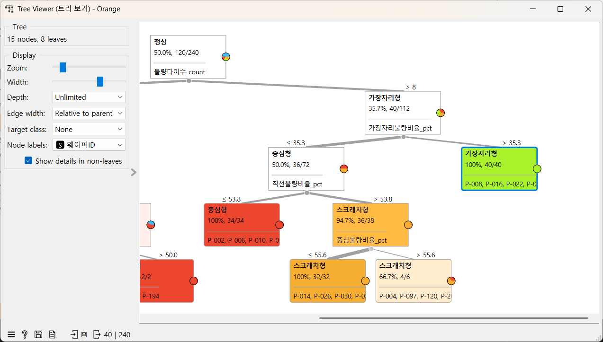
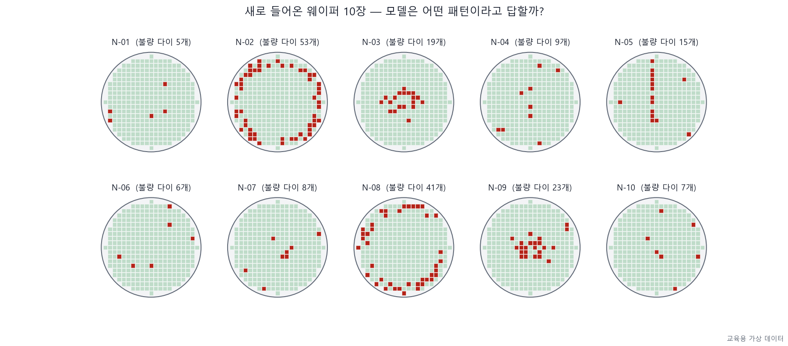
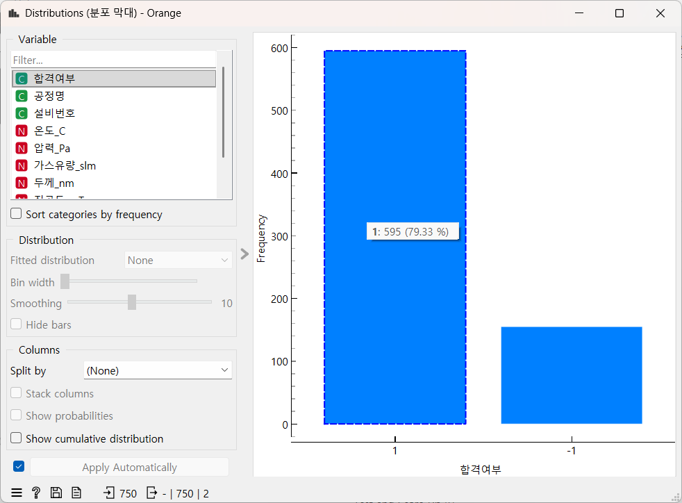
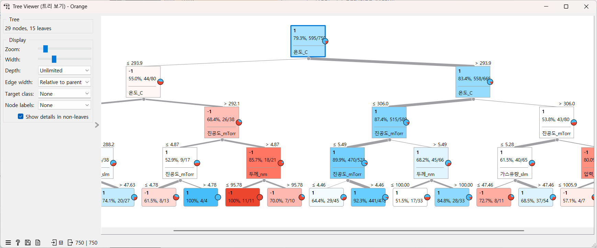

Tree를 끌어 와 위 File과 잇는다. Tree를 더블클릭해 Limit the maximal tree depth to 칸의 100을 4로 바꾼다.
왼쪽 Visualize 묶음의 Tree Viewer를 Tree에 잇고 더블클릭한다.오늘의 질문: "지난 기록만 보고, 아직 검사하지 않은 새 로트의 합격/불합격을 미리 맞힐 수 있을까?"
오늘의 미션 — 입사 아홉째 날, 지난 공정 기록 750건과 아직 검사하지 않은 새 로트 9개를 받았다. 새 로트 가운데 먼저 살펴볼 로트를 골라 보고하자. 그런데 이 모델은 '무조건 합격'이라고 찍는 것보다 나을까? (신입 데이터 담당자의 10일 이야기와 공장·설비·데이터는 모두 교육용 가상이다.)

predict()로 새 로트를 예측하고, 확률이 애매한 로트를 "사람이 다시 볼 것"으로 고를 수 있다.선수 지식: 8차시 — 기준선, "원인 후보"로 말하기 / 7차시 — 합격률, 웨이퍼 불량 모양 / 6차시 — 웨이퍼 맵 / 5차시 — dropna() / 3차시 — 규칙으로 직접 판정하기
웨이퍼는 ②~⑥ 공정을 여러 번 거친 뒤에야 ⑦ 전기 검사(EDS)를 받는다. 검사 전에 불합격이 나올 것 같은 로트를 미리 짐작할 수 있다면 먼저 살펴볼 로트를 고를 수 있다.
3차시에는 사람이 if로 규칙을 직접 썼다. 오늘은 컴퓨터가 지난 기록에서 규칙을 찾게 한다. 이것이 머신러닝이다.
| 말 | 뜻 |
|---|---|
| 목표 열 | 맞혀야 할 열. 오늘 .tab 파일에는 맞힐 열이 미리 정해져 있다 |
| CA | 정확도(Classification Accuracy). 전체 시험용 기록 중 맞힌 비율. 오늘 읽는 칸은 이것 하나다 |
| AUC | 구분 능력(곡선 아래 넓이). 합격·불합격을 점수로 줄 세울 때 순서를 얼마나 잘 맞히는지. 0.5는 찍기 수준, 1에 가까울수록 좋다. 표의 첫 숫자 칸이지만 정확도가 아니다 |
| F1 | 정밀도와 재현율의 균형 점수. 둘 중 하나만 높고 하나가 낮으면 F1도 낮게 나온다 |
| Prec | 정밀도(Precision). 모델이 "불합격"이라고 한 것 중 실제 불합격인 비율. 높을수록 괜한 의심이 적다 |
| Recall | 재현율(찾아내는 비율). 실제 불합격 중 모델이 찾아낸 비율. 높을수록 놓친 불합격이 적다 |
| MCC | 종합 상관 점수(Matthews 상관계수). 헷갈림 표의 네 칸을 모두 반영한다. 0은 찍기 수준, 1은 완벽, 음수는 거꾸로 맞힌다는 뜻이다 |
| nodes, leaves | Tree Viewer 왼쪽 정보 줄의 숫자. nodes = 상자 전체 수, leaves = 끝 상자(잎) 수 |
| Show probabilities for | Predictions 표 위의 칸. Classes known to the model로 바꾸면 답마다 모델이 매긴 확률이 보인다(새 데이터에는 정답 열이 없어 처음에는 확률이 안 보인다) |
다섯 위젯 모두 오늘 처음 쓴다.
| 위젯(화면 이름) | 어느 묶음에 있나 | 한국어 뜻 | 오늘 하는 일 |
|---|---|---|---|
Tree | Model | 결정 트리 | 지난 기록에서 스무고개 같은 질문 순서(규칙)를 찾는다 |
Tree Viewer | Visualize | 트리 보기 | Tree가 찾은 질문 순서를 나무 그림으로 본다 |
Test and Score | Evaluate | 평가 | 트리가 처음 보는 기록을 얼마나 맞히는지 채점한다. CA 열이 정확도다 |
Confusion Matrix | Evaluate | 헷갈림 표 | 어떤 답을 어떤 답으로 헷갈렸는지 칸마다 센다 |
Predictions | Evaluate | 예측 | 정답이 없는 새 데이터를 넣어 줄마다 모델의 답과 확률을 받는다 |

1차시에 본 공정 지도(교육용 단순화). ②~⑥은 층을 쌓을 때마다 여러 번 되풀이하고, ⑦ EDS에서 다이마다 전기를 흘려 합격·불합격을 가린다.
week09_orange_wafer_patterns.csv(240장) — 공정 지도 위치: ⑦ EDS(전기 검사) 웨이퍼 맵을 숫자 넷으로 요약한 표.week09_orange_new_wafers.csv(10장) — 공정 지도 위치: ⑦ EDS를 막 마친 새 웨이퍼. 불량 모양 이름은 아직 없다.week09_pass_fail_train.csv(750행) — 공정 지도 위치: ②~⑤ + 세정의 공정 조건과 검사 결과(공정 중간 검사 + ⑦ EDS 결과를 모은 교육용 설정). 공정 조건만 보고 검사 결과를 미리 맞혀 본다.week09_new_lots_to_predict.csv(9개) — 공정 지도 위치: ②~⑤ + 세정을 마쳤지만 아직 ⑦ 검사 전인 새 로트.머신러닝 모델은 "문제(보고 판단할 값)"와 "정답"이 함께 적힌 지난 기록을 보고, 문제에서 정답으로 가는 규칙을 스스로 찾는다. 규칙을 찾는 일을 학습, 새 기록에 규칙을 적용해 답을 내는 일을 예측이라고 한다.
| 말 | 뜻 | 피자 가게 | 오늘 공정 기록 |
|---|---|---|---|
Feature(특성, X) | 모델이 보고 판단할 열 | 반죽 두께, 오븐 온도, 굽는 시간 | 온도_C, 압력_Pa, 가스유량_slm, 두께_nm, 진공도_mTorr, 습도_pct |
Label(정답, y) | 맞혀야 할 열 | 탔다 / 안 탔다 | 합격여부(1 = 합격, -1 = 불합격) |
Orange에서는 .tab 파일에 Label이 목표 열(target)로 미리 정해져 있다. 파이썬에서는 PART 2에서 X와 y를 직접 나눈다.
결정 트리는 "예/아니요"로 답할 수 있는 질문을 차례로 던져 기록을 나누는 모델이다. 스무고개와 같다. 피자 가게라면 "오븐 온도가 230도 이하인가?"처럼 묻고, 답에 따라 두 갈래로 나눈 뒤, 갈래마다 다시 묻는다.
검색어 결정 트리 스무고개
머신러닝을 처음 배우는 사람에게 결정 트리가 스무고개와 어떻게 비슷한지 3문장으로 설명해줘. 트리의 맨 위 질문과 맨 끝 잎이 각각 무엇을 뜻하는지도 알려줘.모델을 학습시킨 기록으로 다시 채점하면 점수가 부풀려진다. 연습문제 답을 외운 학생에게 같은 문제로 시험을 보는 것과 같다. 그래서 기록을 나눈다.
정확도는 시험용 기록 중 맞힌 비율이다. Orange Test and Score에서는 CA(Classification Accuracy) 열에 0~1 사이 소수로 나온다. 0.80이면 80%다.
정확도는 8차시처럼 기준선(늘 가장 흔한 답만 찍었을 때의 정확도)과 비교한다. 다만 "무조건 합격"은 불합격을 하나도 잡지 못한다. 모델이 불합격을 몇 건 잡았는지는 아래 헷갈림 표로 센다.
Orange 화면에서 왼쪽 세로 줄 Actual은 실제 답, 위쪽 가로 줄 Predicted는 모델의 예측, 맨 끝 ∑는 합계다. Orange 화면의 칸 이름은 1(합격)·-1(불합격)로 보인다. 공장에서는 "실제 불합격인데 합격으로 예측한" 칸(놓친 불합격)을 특히 본다. 칸을 읽는 순서는 아래 그림을 따라간다.
검색어 정확도의 함정 불균형 데이터
합격이 80%, 불합격이 20%인 데이터에서 모델 정확도 80%가 왜 좋은 점수가 아닐 수 있는지 데이터 분석을 처음 배우는 사람에게 3문장으로 설명해줘. 정확도 말고 무엇을 함께 봐야 하는지도 알려줘.학습을 마친 모델에 정답 열이 없는 새 데이터를 넣으면 줄마다 답을 받는다. 연습문제로 공부한 학생이 처음 보는 문제지를 푸는 것과 같다. 모델은 답마다 확률도 매긴다.
검색어 예측 확률의 뜻
분류 모델이 어떤 웨이퍼를 '중심형일 확률 0.6'이라고 답했을 때 이 숫자가 무슨 뜻인지 데이터 분석을 처음 배우는 사람에게 3문장으로 설명해줘. 이 숫자가 실제로 맞을 확률을 보장하는지도 알려줘.6·7차시에 웨이퍼 맵에서 불량 다이(칩이 될 작은 네모)가 가장자리 고리나 한 줄로 몰린 모양을 눈으로 찾았다. 오늘은 그 모양을 트리가 숫자만 보고 맞히게 한다.

웨이퍼 맵 불량 모양 4가지 — 정상·중심형·가장자리형·스크래치형(P-001, P-002, P-008, P-004). 빨강 = 불합격 다이, 옅은 초록 = 합격 다이. 이 가상 웨이퍼 한 장에는 다이가 317개다(실제 다이 수는 칩 크기에 따라 다르다).
week09_orange_wafer_patterns.csv(240행 6열)는 웨이퍼 240장의 맵을 한 장에 한 행씩 숫자 넷으로 요약했다. 한 행 = 웨이퍼 1장이다.
| 열 | 뜻 |
|---|---|
웨이퍼ID | 웨이퍼 번호(P-001~P-240). 이름표(meta)라 학습에 쓰지 않는다 |
불량다이수_count | 그 웨이퍼의 불합격 다이 개수(count = 센 수) |
중심불량비율_pct, 가장자리불량비율_pct | 불합격 다이 중 가운데(중심에서 42mm 안) / 가장자리(112mm 밖)에 있는 비율(퍼센트). 이 가상 웨이퍼는 지름 300mm다 |
직선불량비율_pct | 불합격 다이 중 한 직선 위에 늘어선 비율(긁힘 단서) |
불량패턴 | 목표 열(Label). 정상 120장 · 중심형 40장 · 가장자리형 40장 · 스크래치형 40장. 정상은 불량 다이 3~8개가 흩어져 뚜렷한 모양이 없는 웨이퍼다(불량 0개라는 뜻이 아니다) |
week09_1_patterns_start.ows를 연다.
Tree를 끌어 와 위 File과 잇는다. Tree를 더블클릭해 Limit the maximal tree depth to 칸의 100을 4로 바꾼다.
왼쪽 Visualize 묶음의 Tree Viewer를 Tree에 잇고 더블클릭한다.75.0%, 30/40은 "40장 중 30장이 그 답"이다. 상자 맨 아래 열 이름이 다음 질문, 선 옆의 ≤ 숫자·> 숫자가 그 답이다.40/40이라고 적힌 상자를 찾아, 그 바로 위 선에 적힌 질문을 읽는다.
가장자리불량비율_pct 질문의 > 35.3 쪽 상자가 가장자리형 · 100%, 40/40이다(다른 모양은 여러 상자에 나뉜다).
이 질문은 맨 위가 아니라 둘째 줄에 있다. 불량이 흩어져 있기만 한 정상 웨이퍼도 가장자리 비율이 평균 약 36%라, 트리는 다른 질문으로 먼저 나눈 뒤 이 질문을 던진다. 맨 위 첫 질문(뿌리)은 PART 3 실습지 문제 3에서 적는다.

Test and Score를 위 File과 잇고, Tree도 Test and Score에 잇는다(선 두 개).
더블클릭해 왼쪽 Cross validation의 Number of folds를 10으로 고른다. 오른쪽 표의 Tree 줄에서 CA 한 칸만 읽는다.Predictions를 아래 File(새 웨이퍼 10장)에 잇고, Tree도 Predictions에 잇는다.
표 위의 Show probabilities for를 Classes known to the model로 바꾼다. Tree 열에 확률 네 개(정상 : 중심형 : 가장자리형 : 스크래치형 순서)와 화살표 뒤의 답이 보인다.
새 웨이퍼 10장(N-01~N-10, 교육용 가상 데이터). 빨간 칸 = 불합격 다이. 표에는 숫자 넷만 있고 불량패턴 열이 없다.
같은 위젯으로 공정 기록 week09_pass_fail_train.csv(750행 9열)를 본다. 한 행 = 공정 작업 기록 1건과 그 뒤 검사 결과다.
| 열 | 공장에서의 뜻 |
|---|---|
공정명, 설비번호 | 어떤 작업(산화·포토·식각·증착·세정)을 어느 기계(EQ-01~EQ-04)에서 했나. 설비 4대가 여러 공정 기록을 함께 남겼다(교육용 가상 기록). 글자 열이라 Feature로 쓰지 않는다(Orange에서도 meta) |
온도_C, 압력_Pa | 설비 안 작업 공간(챔버)의 온도(_C = 섭씨 도)와 압력(파스칼). 압력은 교육용 값이라 크기를 해석하지 않는다 |
가스유량_slm | 흘려 넣은 가스의 양(slm은 분당 흘려 넣은 가스 양의 단위) |
두께_nm, 진공도_mTorr | 작업 뒤 막의 두께(nm = 10억분의 1m), 챔버 안에 남은 기체의 압력(숫자가 작을수록 진공에 가깝다) |
습도_pct | 클린룸 공기의 습도(퍼센트) |
합격여부 | 목표 열(Label). 그 작업 기록에 붙여 둔 검사 결과(공정 중간 검사와 ⑦ EDS 결과를 한 열에 모은 교육용 설정), 행마다. 1 = 합격, -1 = 불합격. 같은 로트가 여러 행에 나올 수 있다. 새 로트 파일(9행 8열)에는 이 열이 없다 |
온도·두께·진공도도 다섯 공정 모두 비슷한 크기로 만든 교육용 값이라, 실제 공정 조건(공정마다 크게 다르다)으로 읽지 않는다.
File → Open으로 week09_2_passfail_start.ows를 연다. 위 File = 학습용 공정 기록 750행, 아래 File = 검사 전인 새 로트 9개다. 위 File을 더블클릭해 750행이 들어왔는지 본다(캔버스 메모 ①).
Distributions를 잇고, Variable에서 합격여부를 고른 뒤 Split by를 None으로 바꾼다. 막대 두 개의 건수를 읽고, 합격이 전체 750건의 몇 %인지 계산한다.
Tree를 잇고 깊이를 4로 바꾼 뒤, Tree에 Tree Viewer를 잇는다. Show details in non-leaves에 체크하고, 맨 위 상자 아래쪽의 열 이름과, 왼쪽 갈래 상자의 굵은 글자·숫자를 읽는다.온도_C다. 뿌리 상자의 1 · 79.3%, 595/750은 1단계 Distributions로 구한 기준선과 같다 — 아무 질문도 하지 않았을 때 가장 흔한 답(합격)의 비율이다.
≤ 293.9 갈래 상자는 -1 · 55.0%, 44/80 — 온도가 293.9 이하인 기록 80건 중 44건이 불합격이다. > 293.9 갈래는 1 · 83.4%, 558/669다.

확인하기 — 트리가 온도_C로 먼저 나눴다고 "온도가 불합격의 원인"이라고 단정하지 않는다.
트리는 기록을 잘 나누는 열을 고를 뿐이고, 같은 때 함께 달라진 다른 조건이 있었을 수 있다. 말할 수 있는 것은 "온도는 불합격의 원인 후보"까지다.
Predictions를 아래 File(새 로트 9개)에 잇고, Tree도 Predictions에 잇는다. 표 위의 Show probabilities for를 Classes known to the model로 바꾼다.
Tree 열에 숫자 : 숫자 → 답 모양의 글자가 보인다. 앞의 두 숫자는 차례로 1(합격)일 확률, -1(불합격)일 확률이고, 화살표 뒤가 예측이다.캔버스 메모 ⑤(Test and Score와 Confusion Matrix)는 PART 3 실습지 문제 4에서 직접 잇고, 이 트리가 기준선 79.3%보다 나은지 확인한다. 웨이퍼 맵처럼 뚜렷한 단서가 공정 기록에도 있는지 거기서 비교해 보자.
PART 1에서 Orange 위젯으로 한 일을 파이썬 몇 줄로 다시 한다. 짝을 지어 보면 이렇다.
| Orange(PART 1) | 파이썬(PART 2) |
|---|---|
| File — 표 불러오기, 목표 열이 미리 정해져 있다 | pd.read_csv(...)로 읽고 X(Feature)와 y(Label)를 직접 나눈다 |
| Test and Score — 10겹으로 돌아가며 채점 | train_test_split으로 학습용 80% · 시험용 20%를 한 번 나눈다 |
| Tree — 깊이 4 | DecisionTreeClassifier(max_depth=4, ...)를 만들고 .fit으로 학습시킨다 |
| CA 열 | accuracy_score로 시험용 정확도를 구한다 |
| Predictions — 새 데이터 File을 잇는다 | model.predict(새 표[features])로 줄마다 답을 받는다 |
5차시처럼 빈칸 행을 먼저 지운다. 결정 트리는 빈칸이 있어도 오류 없이 학습하지만, 정확도가 조용히 달라진다.
import pandas as pd
df = pd.read_csv("week09_pass_fail_train.csv", encoding="utf-8")
print(df.shape)
print(df.isna().sum())
# TODO: 빈칸이 있는 행을 지우는 함수 이름을 채우세요. (결과: (735, 9))
df = df.____()
print(df.shape)____에 5차시에 배운, 빈칸 행을 지우는 함수 이름을 넣는다. 아래 결과와 같게 나오면 맞다.(750, 9) 공정명 0 설비번호 0 온도_C 1 압력_Pa 3 가스유량_slm 3 두께_nm 0 진공도_mTorr 0 습도_pct 8 합격여부 0 dtype: int64 (735, 9)
빈칸이 있는 15행이 지워져 750행 → 735행이 됐다. Orange는 행을 지우지 않고 빈칸을 스스로 처리해 750행을 그대로 썼다.
X = df[features]로 Feature 여섯 열을(4차시의 여러 열 고르기), y = df["합격여부"]로 정답 열 하나를 고른다.train_test_split(X, y, ...)은 학습용 X, 시험용 X, 학습용 y, 시험용 y를 이 순서로 돌려준다.test_size=0.2는 시험용 20%, random_state=42는 몇 번을 돌려도 같게 나누는 설정이다. stratify=y(합격·불합격 비율을 똑같이 나누기)는 그대로 쓴다.features = ["온도_C", "압력_Pa", "가스유량_slm", "두께_nm", "진공도_mTorr", "습도_pct"]
X = df[features]
y = df["합격여부"]
print(X.shape, y.shape)
from sklearn.model_selection import train_test_split
X_train, X_test, y_train, y_test = train_test_split(X, y, test_size=0.2, random_state=42, stratify=y)
print(len(X_train), len(X_test))(735, 6) (735,) 588 147
(735, 6)은 735행 6열의 표, (735,)는 열 하나짜리 값 735개라는 뜻이다. 735행이 학습용 588개, 시험용 147개로 나뉘었다.
DecisionTreeClassifier(max_depth=4, random_state=42) — 깊이 4짜리 빈 트리. Orange Tree 위젯을 캔버스에 놓은 것과 같다.model.fit(학습용 X, 학습용 y) — 학습. 실행하면 모델 이름이 적힌 상자가 보이는데, 오류가 아니라 "학습시켰다"는 표시다.model.predict(시험용 X) — 줄마다 답을 낸다(늘 fit 뒤에서 쓴다). accuracy_score(정답, 예측)은 맞힌 비율(0~1)이다.from sklearn.tree import DecisionTreeClassifier
model = DecisionTreeClassifier(max_depth=4, random_state=42)
# TODO: 학습용 X와 y로 모델을 학습시키는 함수 이름을 채우세요.
model.____(X_train, y_train)
from sklearn.metrics import accuracy_score
acc = accuracy_score(y_test, model.predict(X_test))
print(f"정확도: {round(acc * 100, 1)}%")model.____에 학습시키는 함수 이름을 넣는다. 정확도 셀을 학습 셀보다 먼저 실행하면 NotFittedError가 난다 — 위에서부터 차례로 실행한다.비교 기준: 시험용 147개 중 합격은 116개다. 모두 "합격"이라고 찍으면 116 ÷ 147 ≈ 78.9%를 맞힌다(파이썬 쪽 기준선). 실행 결과를 보기 전에, 이 모델이 기준선보다 얼마나 나을지 예상해 보자.
DecisionTreeClassifier(max_depth=4, random_state=42) 정확도: 80.3%80.3%는 기준선 78.9%보다 1.4%p 높을 뿐이다(147개 중 118개 vs 116개, 겨우 2개 차이). 이 숫자 하나로 "좋은 모델"이라고 말하기 어렵다. 반대로 "무조건 합격"이 더 낫다는 뜻도 아니다. 이 모델은 시험용 불합격 31개 중 9개를 잡고 22개를 놓쳤다. "무조건 합격"은 31개를 모두 놓친다 — 정확도가 비슷해도 하는 일은 다르다.
새 로트 파일에는 정답(합격여부) 열이 없다. 새 로트에도 학습할 때와 같은 열 6개(features)만 골라 넣고, 답은 새 열 new_lots["예측"]에 담는다. 예측 열도 1 = 합격, -1 = 불합격이다.
new_lots = pd.read_csv("week09_new_lots_to_predict.csv", encoding="utf-8")
print(new_lots.shape)
# TODO: 학습한 모델로 새 로트의 합격/불합격을 예측하는 함수 이름을 채우세요.
new_lots["예측"] = model.____(new_lots[features])
print(new_lots[["공정명", "설비번호", "온도_C", "예측"]])
print(f"새 로트 {len(new_lots)}개 중 불합격 예측 {(new_lots['예측'] == -1).sum()}개")model.____에 예측하는 함수 이름을 넣는다. 3단계 정확도 줄에서 이미 본 함수다. 마지막 줄은 7차시처럼 == -1이 True인 줄을 더해 개수를 센다.(9, 8) 공정명 설비번호 온도_C 예측 0 식각 EQ-02 294.5 1 1 산화 EQ-02 301.5 1 2 식각 EQ-04 289.8 -1 3 포토 EQ-04 295.6 1 4 식각 EQ-04 299.1 1 5 포토 EQ-03 302.0 1 6 산화 EQ-01 305.2 1 7 산화 EQ-03 299.1 1 8 세정 EQ-01 300.6 1 새 로트 9개 중 불합격 예측 1개
맨 왼쪽은 0부터 센 행 번호라 3번째 로트가 2로 보인다. 그 로트(식각 · EQ-04 · 289.8도)만 -1로 예측됐다. 예측은 먼저 볼 로트를 고르는 참고일 뿐, ⑦ 검사는 9개 모두 그대로 한다.
오늘의 숫자를 ChatGPT에 주고 팀장에게 보낼 보고서를 써 달라고 한다(노트북 5단계).
아래는 교육용 가상 데이터로 만든 반도체 공정 합격/불합격 예측 결과야. 팀장에게 보낼 3문장 보고서를 써 줘. 결과를 원인으로 단정하지 말고 "원인 후보"라는 표현을 쓰고, 마지막에 가상 데이터라는 점을 밝혀 줘.
- 결정 트리 정확도(시험용 147개): 80.3%
- 기준선(모두 합격이라고 찍었을 때의 정확도): 78.9%
- Orange Confusion Matrix(결정 트리, 10겹 교차검증, 750건): 실제 불합격 155건 중 119건을 합격으로 예측(놓침)
- 새 로트 9개 예측: 불합격 1개(3번째 로트), 합격 8개ChatGPT를 쓸 수 없으면 아래 응답 예시(노트북 5단계에도 있다)로 같은 활동을 한다. 내가 받은 답도 같은 방법으로 검증한다.
새 로트 9개 중 결정 트리가 불합격으로 예측한 로트는 2개이며, 3번째 로트(식각·EQ-04, 온도 289.8도)가 그중 하나입니다. 모델 정확도는 80.3%로 모두 합격이라고 찍는 기준선 78.9%와 큰 차이가 없고, Orange 교차검증에서는 실제 불합격 155건 중 119건을 합격으로 놓쳤습니다. 3번째 로트는 온도가 낮아서 불합격이 생깁니다(이 결과는 교육용 가상 데이터로 만든 것입니다).
정확도: 80.3% 기준선(모두 합격): 78.9% 불합격 예측: 1개 공정명 설비번호 온도_C 2 식각 EQ-04 289.8
9차시 실습지를 열고 순서대로 푼다.
온도_C 한 열로 모델을 만들어 채점한다. 문제 2는 빈칸 없이 직접 쓴다.다 풀면 "정답 보기"로 확인하고, 문제 5의 보고 문장을 옆 사람에게 읽어 준다.
X = df[features](공정 조건 6열), y = df["합격여부"]model.predict(new_lots[features]) → 9개 중 -1이 1개week09_orange_wafer_patterns.csv — 240행 6열(워밍업 학습용). 공정 지도 위치: ⑦ EDS 웨이퍼 맵의 요약.week09_orange_new_wafers.csv — 10행 5열(워밍업 새 데이터, 정답 열 없음). 공정 지도 위치: ⑦ EDS를 막 마친 새 웨이퍼.week09_pass_fail_train.csv — 750행 9열(학습용, 빈칸 15칸). 설비 4대(EQ-01~EQ-04)가 여러 공정 기록을 함께 남겼다(교육용 가상 기록). 공정 지도 위치: ②~⑤ + 세정.week09_new_lots_to_predict.csv — 9행 8열(새 로트, 정답 열 없음). 공정 지도 위치: ②~⑤ + 세정 뒤, ⑦ 검사 전..tab을 연다. 열 설명: 데이터 설명서temp_features = "온도_C"처럼 대괄호를 빠뜨리면 X1.shape가 (735,)로 나오고, 학습할 때
ValueError: Expected a 2-dimensional container로 시작하는 오류가 난다. 열이 하나여도 ["온도_C"]처럼 리스트로 쓴다.
model.predict(new_lots)처럼 글자 열까지 넣으면
ValueError: The feature names should match those that were passed during fit.가 난다. 학습 때와 같은 열 목록으로 골라 넣는다(new_lots[features]). 문제 2에서 X_test(6개 열)와 X1_test(1개 열)를 섞어도 같은 오류가 난다.
온도_C)도 불합격의 원인 후보까지다.복습 문제 전체는 quiz.json(수업 후 자율 복습)에 있다. 아래는 그중 일부다.
온도_C였다. "온도 때문에 불합격이 났다"고 보고해도 될까? 한 문장으로 답해 보자.10차시는 마지막 날, 종합 수업이다. 실습지 없이, "새 로트 중 어느 것부터 점검할까?"라는 문제 하나를 AI와 Orange3로 풀어 가는 과정을 처음부터 끝까지 함께 본다. 데이터 점검 → 지난 기록 비교 → 오늘 배운 예측 → AI 답 확인 순서로, 1~9차시에 배운 것을 한 번에 다시 만난다. 파이썬은 쓰지 않는다.
다음 미션 — 마지막 날, 팀장이 "검사 전인 새 로트 중 먼저 볼 로트를 골라, 근거 숫자와 함께 세 줄로 보고해 줘"라고 했다. (이야기·데이터 모두 가상)